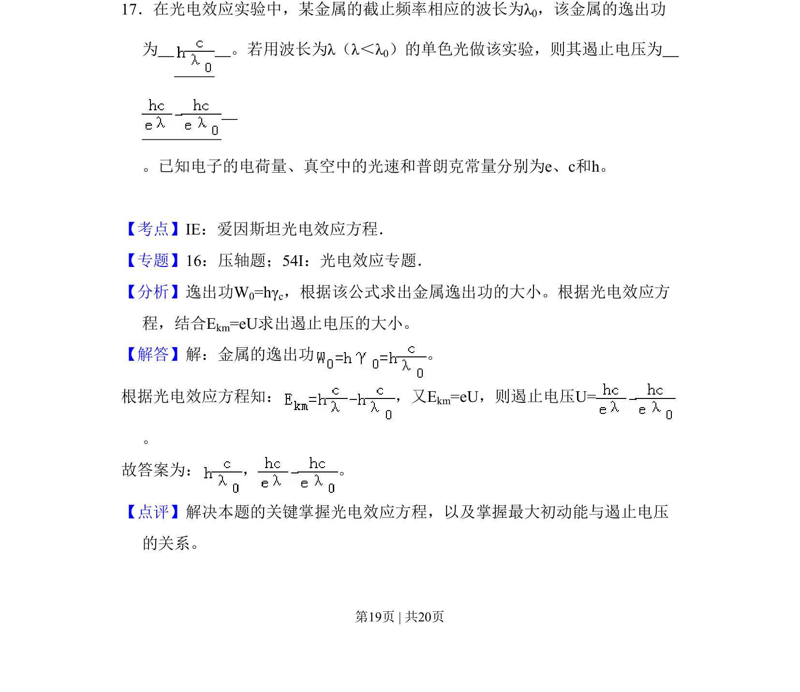
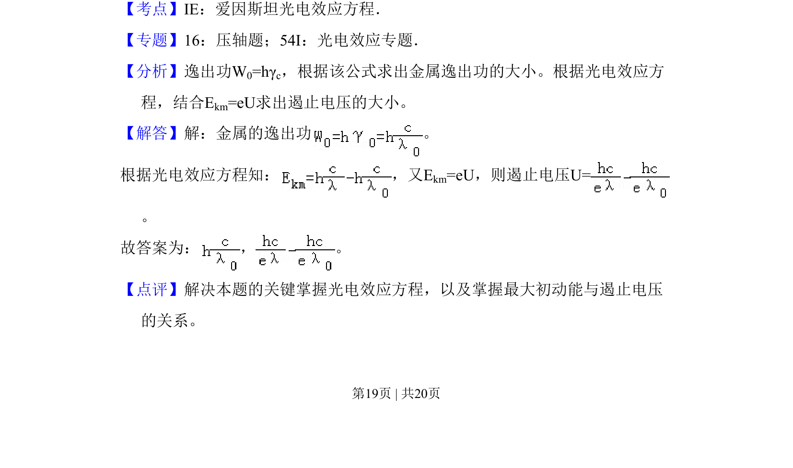

2011-新课标-17
考点：光电效应方程 逸出功 遏止电压
题面

摘要
考查爱因斯坦光电效应方程，计算金属逸出功和遏止电压。
关联考点
答案与解析


📄 原 PDF 第 19 页：
素材/真题/吉林/2008-2024·（吉林）物理高考真题/2011年高考物理试卷（新课标）（解析卷）.pdf
题干文本
17．在光电效应实验中，某金属的截止频率相应的波长为λ0，该金属的逸出功 为 。若用波长为λ（λ＜λ0）的单色光做该实验，则其遏止电压为 。已知电子的电荷量、真空中的光速和普朗克常量分别为e、c和h。
解析文本
【考点】IE：爱因斯坦光电效应方程．菁优网版权所有 【专题】16：压轴题；54I：光电效应专题． 【分析】逸出功W0=hγc，根据该公式求出金属逸出功的大小。根据光电效应方 程，结合Ekm=eU求出遏止电压的大小。 【解答】解：金属的逸出功 。 根据光电效应方程知： ，又E km=eU，则遏止电压U= 。 故答案为： ， 。 【点评】解决本题的关键掌握光电效应方程，以及掌握最大初动能与遏止电压 的关系。